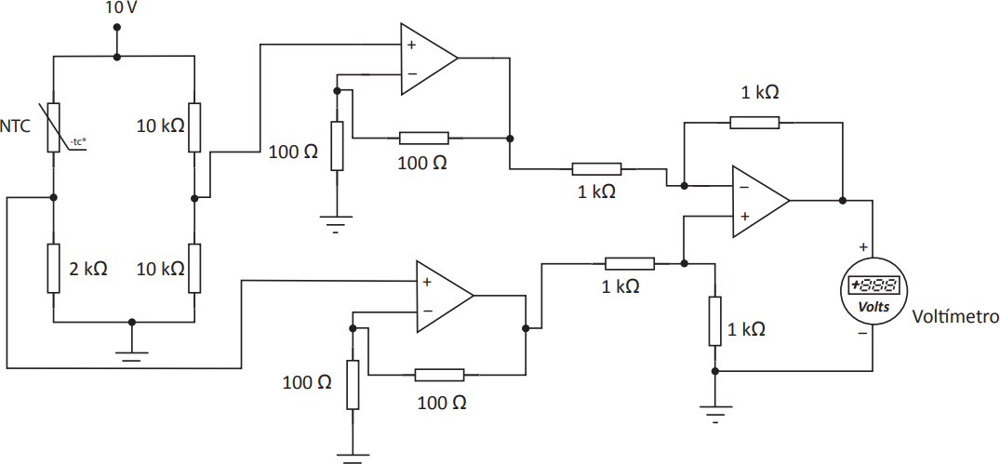

Os amplificadores operacionais são utilizados em circuitos de controle e supervisão de processos industriais, em que sinais de entrada são provenientes de sensores ou transdutores colocados nas malhas de controle do sistema. O diagrama a seguir ilustra um exemplo de circuito utilizado para medição da temperatura com um sensor do tipo NTC (Negative Temperature Coefficient):

De acordo com o manual do fabricante do sensor NTC, para uma temperatura de 30 °C é observada uma
resistência de 8 , portanto, o valor da tensão exibida na tela (display) do voltímetro ligado na saída do
circuito eletrônico apresentado é de